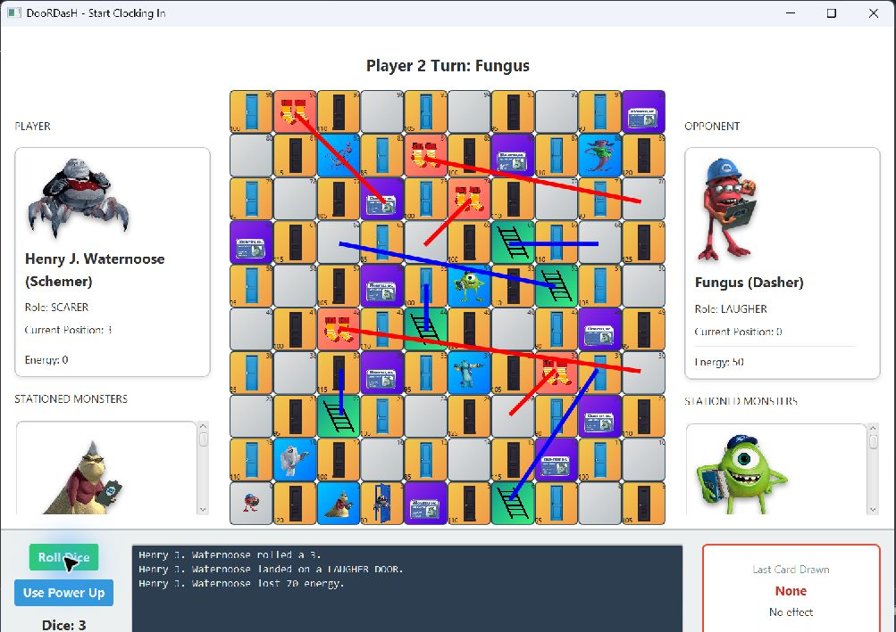
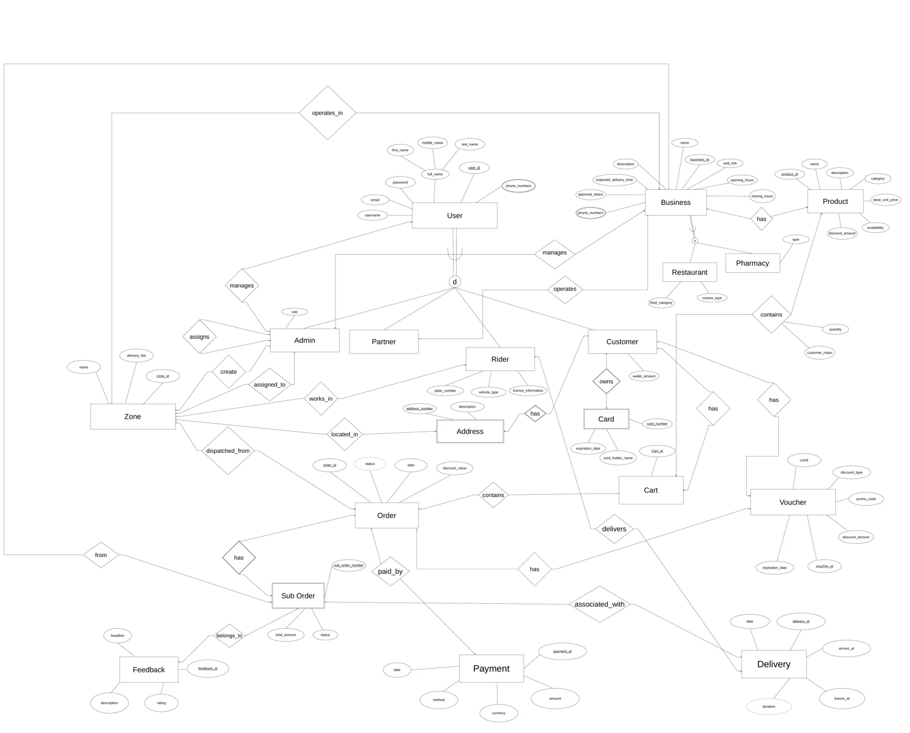
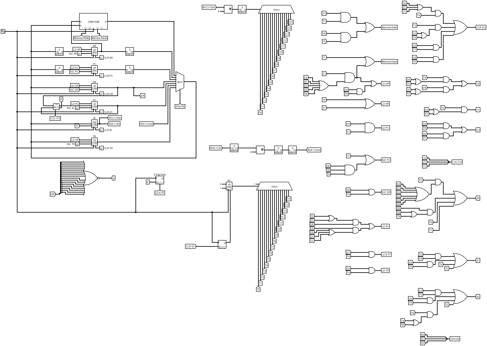

DESKTOP APPLICATION01

JavaFX · Actual gameplayGUC PROJECT2026
DooRDasH
A turn-based board game built across three design levels: class hierarchies, a tested game engine, and a JavaFX interface.
HI, I’M ADAM IBRAHIM
Computer Science & Engineering student at GUC.
I build C/Java applications, with a growing focus on backend development.
Cairo, Egypt · Learning by building
{ "name": "Adam Ibrahim", "studying": "Computer Science & Engineering", "university": "GUC", "interests": [ "Backend development", "Desktop applications", "Computer architecture" ], "learning": "Node.js"}01 / SELECTED WORK
A closer look at the code, the design decisions,
and the ideas behind seven projects.

JavaFX · Actual gameplayA turn-based board game built across three design levels: class hierarchies, a tested game engine, and a JavaFX interface.
A Flask stock-trading simulator connecting accounts, virtual portfolios, trades, and transaction history through a relational database.
 Build a machine · Trace its behavior
Build a machine · Trace its behaviorAn interactive workspace around my JavaScript DFA model. Build machines, trace strings, and explore union, intersection, and complement.
A reporting tool used by my team leader to summarize current sales for logistics and management. Explore a working example with fictional data.

Team project · EERD & relational schemaAn ongoing CSEN 501 team project modeling a local delivery marketplace across three milestones. The first defines an EERD and a 25-relation schema.
Reservation constraints in Prolog, ingredient and expense transformations in Haskell, and a browser demo connecting the ideas.

A 16-bit shared bus, registers, RAM, and an ALU, coordinated by hardwired control for a seven-instruction program.
02 / A LITTLE ABOUT ME
I’m studying Computer Science and Engineering at the German University in Cairo. I’m particularly interested in backend development and how web applications handle data and application logic.
I build Java applications and Python web projects, and have experience with JavaScript. I’m currently learning Node.js to develop my backend skills.
Beyond code, my experience as a Senior Call Center Agent strengthened how I communicate, support teammates, and solve problems with people.
My toolbox
03 / GET IN TOUCH
Have a project in mind, an opportunity, or a question about my work?
adam.ibrahim.dev@gmail.com